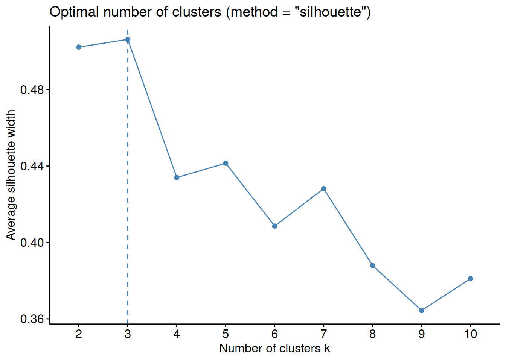
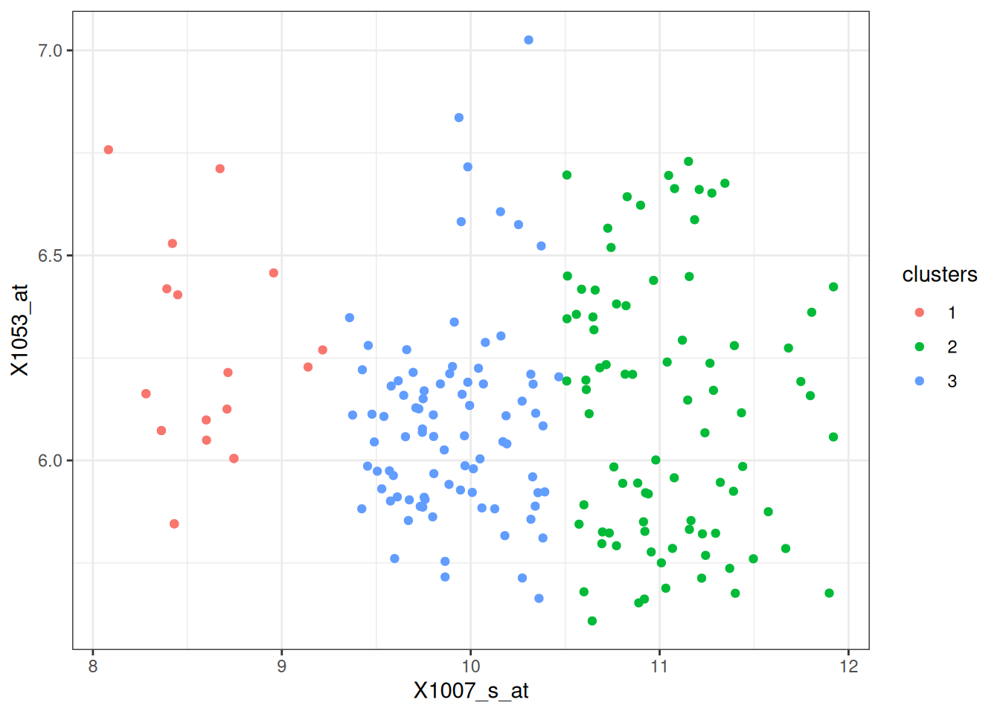
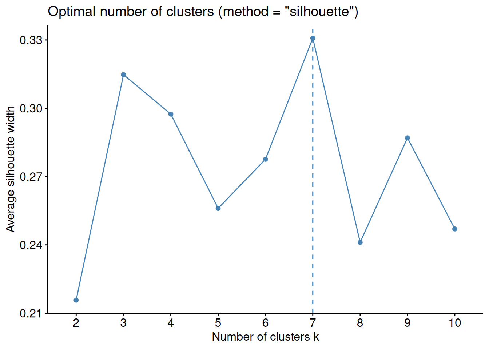
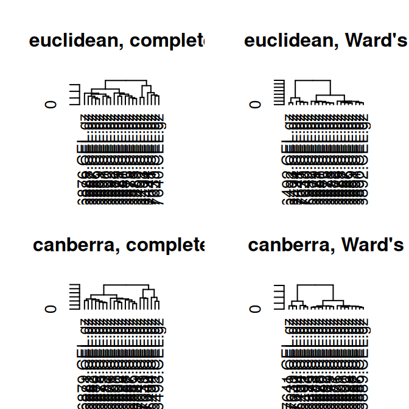
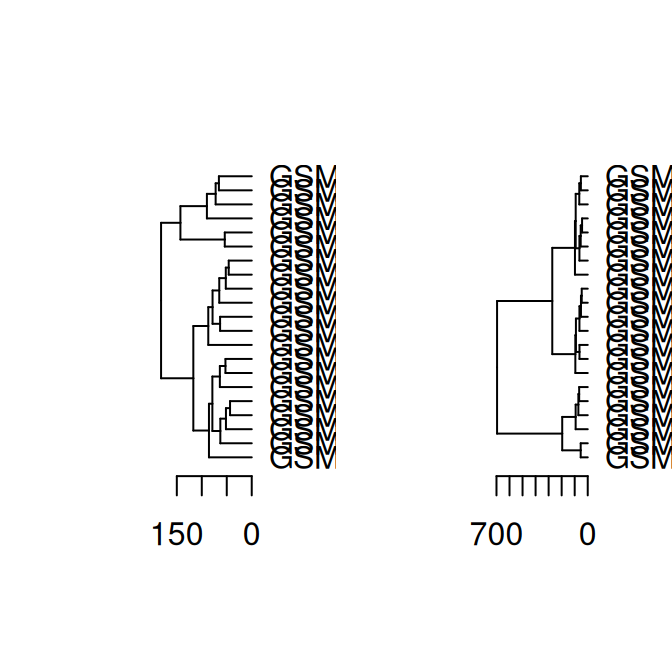
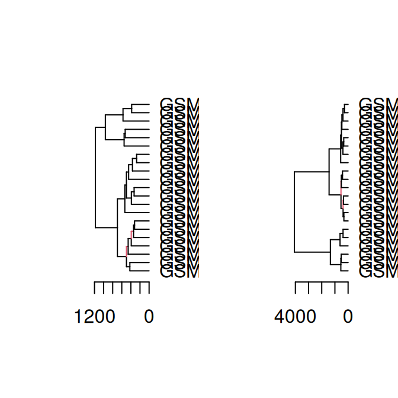

Code
library(tidyverse)
library(dendextend)
library(patchwork)
library(knitr)
library(kableExtra)
library(cluster)
library(RColorBrewer)
library(ggalt)
library(factoextra)
library(NbClust)
library(pvclust)
library(ComplexHeatmap)
library(circlize)library(tidyverse)
library(dendextend)
library(patchwork)
library(knitr)
library(kableExtra)
library(cluster)
library(RColorBrewer)
library(ggalt)
library(factoextra)
library(NbClust)
library(pvclust)
library(ComplexHeatmap)
library(circlize)You have found some older gene expression data, based on the microarray technology. They contains measurements for 22215 genes for 189 samples, across 7 tissue (kidney, hippocampus, cerebellum, colon, liver, endometrium and placenta).
Data can be loaded and preview:
load("data/tissuesGeneExpression.rda")
# expression data
print(dim(e))[1] 22215 189print(head(e[1:4, 1:5])) GSM11805.CEL.gz GSM11814.CEL.gz GSM11823.CEL.gz GSM11830.CEL.gz
1007_s_at 10.191267 10.509167 10.272027 10.252952
1053_at 6.040463 6.696075 6.144663 6.575153
117_at 7.447409 7.775354 7.696235 8.478135
121_at 12.025042 12.007817 11.633279 11.075286
GSM12067.CEL.gz
1007_s_at 10.157605
1053_at 6.606701
117_at 8.116336
121_at 10.832528# corresponding sample information
str(tab)'data.frame': 189 obs. of 6 variables:
$ filename : chr "GSM11805.CEL.gz" "GSM11814.CEL.gz" "GSM11823.CEL.gz" "GSM11830.CEL.gz" ...
$ DB_ID : chr "GSM11805" "GSM11814" "GSM11823" "GSM11830" ...
$ ExperimentID : chr "GSE781" "GSE781" "GSE781" "GSE781" ...
$ Tissue : chr "kidney" "kidney" "kidney" "kidney" ...
$ SubType : chr "normal" "cancer" "normal" "cancer" ...
$ ClinicalGroup: chr NA NA NA NA ...Exercise 1 (Partition methods) Use first two genes only and run k-means clustering.
Exercise 2 (HCL) Select samples corresponding to two tissues of your choice. Run HCL and compare dendrograms:
Exercise 3 (Pvclust) Try running pvclust on the samples you’ve chosen above. Which clusters are supported by bootstrapping?
Exercise 4 (Heatmap) Select top 100 genes based on variance (with highest variance). Make a heatmap using ComplexHeatmap package. Group columns (samples) by tissue and split rows (genes) using k-means (k = 7).
Solution. Exercise 1
# load data
load("data/tissuesGeneExpression.rda")
# subset gene expression data, two first genes
x2 <- t(e[1:2, ])
# find optimal number of cluster using WSS
factoextra::fviz_nbclust(x2, FUNcluster = kmeans, method="sil")
# decide on the best cluster
k_best <- 3
# run k-means with best k
res_kmeans2 <- kmeans(x2, centers = k_best)
# prepare data for plotting, add cluster solutions
df <- data.frame(x2, clusters = res_kmeans2$cluster) %>%
mutate(clusters = as.factor(clusters))
# plot data
df %>%
ggplot(aes(x = X1007_s_at, y = X1053_at, color = clusters)) +
geom_point() +
theme_bw()
# run for 1000 genes
n <- nrow(e)
n <- 1000
x_n <- t(e[1:n, ])
# run k-means with best k
res_kmeans_n <- kmeans(x_n, centers = k_best)
# To compare clustering results, we can compare average Silhouette for k = 3.
# one way to do so is to plot average Silhouette as a function of different k again
factoextra::fviz_nbclust(x_n, FUNcluster = kmeans, method="sil")
# from the plot we can see now that the best value for k is 7
# Looking at the average Silhouette value at k = 3, it is just above 0.3 when using 1000 genes
# whereas it was above 0.5 when using 2 genes.
# This means that choosing k = 3 for 1000 genes would results in worse clustering solution than when choosing k = 3 for 2 genes.
# We can also see that the best number of clusters for 1000 genes is now 7.
# Since we have some prior knowledge here, i.e. we know that the samples originate from 7 tissues and gene expression has been shown tissue specific, most likely using only two first genes is not enough to cluster samples into relevant groups. Solution. Exercise 2
# see how many samples of each tissue we have
print(summary(as.factor(tab$Tissue))) cerebellum colon endometrium hippocampus kidney liver
38 34 15 31 39 26
placenta
6 # let's pick the fours tissues with smallest amount of samples
# so the dendrograms are smaller and easier to read
data_samples <- tab %>%
as_tibble() %>%
filter(Tissue %in% c("placenta", "endometrium"))
# subset gene expression data
x <- t(e[, data_samples$filename])
# make dendrograms
dend_euclidean_complete <- as.dendrogram(hclust(dist(x, method = "euclidean"), method = "complete"))
dend_euclidean_ward <- as.dendrogram(hclust(dist(x, method = "euclidean"), method = "ward.D"))
dend_canberra_complete <- as.dendrogram(hclust(dist(x, method = "canberra"), method = "complete"))
dend_canberra_ward <- as.dendrogram(hclust(dist(x, method = "canberra"), method = "ward.D"))
# plot all dendrograms
par(mfrow=c(2,2))
plot(dend_euclidean_complete, main = "euclidean, complete")
plot(dend_euclidean_ward, main = "euclidean, Ward's")
plot(dend_canberra_complete, main = "canberra, complete")
plot(dend_canberra_ward, main = "canberra, Ward's")
# compare 2 side-by-side
dend_diff(dend_euclidean_complete, dend_euclidean_ward)
dend_diff(dend_canberra_complete, dend_canberra_ward)